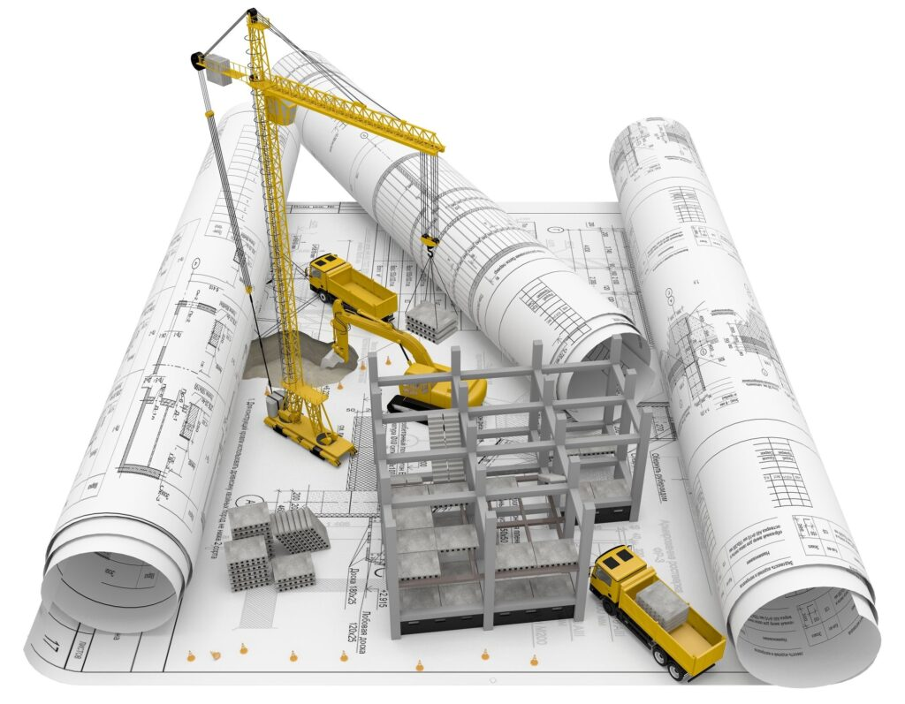

Om prosjekt
Hovedmålet er å levere et design som formidler informasjon om en felles
bærekraftig fremtid i Bergen, og på samme tid engasjere Bergens
innbyggere til å være mer miljøbevisst og ta ansvar inn I deres hjem og daglige
rutiner. Teknologiens rolle i byutvikling er svært sentral og blir et viktig verktøy
i arbeidet med å skape en by som ivaretar miljøet og samfunnets behov. Gjennom
teknologiske løsninger som sensorer, energisystemer og grønn infrastruktur
kan vi overvåke miljøstøy, regulere energiforbruk og fremme bærekraftige
transportalternativer. Ved å integrere slike løsninger kan vi forbedre
livskvaliteten for innbyggerne, samtidig som vi bidrar til en bærekraftig
fremtid. Teknologi gir oss verktøyene til å bygge byer som er både smarte
og ansvarlige, og som setter standarden for moderne, bærekraftig utvikling.
Ferdige prosjekter
- Utvikling av en informativ nettside
- Implementering av grønne metoder
- Informert samfunnet

Prosjekt vi jobber med:
- Nye bybane ruter
- Bekjempe forsøpling
- Tiljengelighet i hele byen

Framtidig prosjekt
- Raskere transportmidler
- En mer attraktiv by
- Fremtidsikring